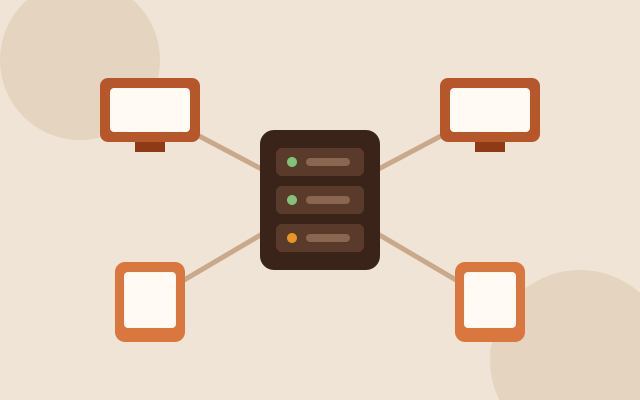
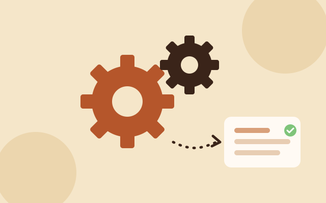

01
Ta'lim dasturlari tuzish
O'quv markazlari va maktablar uchun aniq maqsadli, bosqichma-bosqich o'quv dasturlari va kurs rejalarini ishlab chiqaman.
5 yildan ortiq tajribaga ega IT mutaxassis va o'qituvchiman. Bilimimni ta'lim va biznes uchun amaliy yechimlarga aylantirib, odamlarga texnologiyadan samarali foydalanishga yordam beraman.
Bog'lanishTa'lim, texnologiya va biznes jarayonlarini bir joyda birlashtiraman.
O'quv markazlari va maktablar uchun aniq maqsadli, bosqichma-bosqich o'quv dasturlari va kurs rejalarini ishlab chiqaman.
Kompyuter va tarmoqlarni sozlash, dasturiy ta'minot o'rnatish va texnik masalalarda maslahat berish.
Takrorlanuvchi qo'l ishlarini avtomatlashtirib, vaqt va xarajatni tejaydigan raqamli yechimlarni joriy qilaman.
Turli yo'nalishlarda bajarilgan ishlarimdan namunalar.
Loyiha haqida qisqa tavsif shu yerda bo'ladi.

Loyiha haqida qisqa tavsif shu yerda bo'ladi.

Loyiha haqida qisqa tavsif shu yerda bo'ladi.
O'quvchilar, ota-onalar va hamkorlarning fikrlari.
Bu yerga mijoz fikri qo'yiladi — 2–3 jumladan iborat qisqa sharh.
Bu yerga mijoz fikri qo'yiladi — 2–3 jumladan iborat qisqa sharh.
Bu yerga mijoz fikri qo'yiladi — 2–3 jumladan iborat qisqa sharh.
Javobini topa olmasangiz, bemalol yozing.
Telefon qiling (+998 90 564 46 07) yoki Telegram'da @Yahyohon_1505 ga yozing. Xabaringizni ko'rishim bilan javob beraman.
Uch yo'nalishda ishlayman: ta'lim dasturlari tuzish, IT xizmatlari ko'rsatish va biznesni avtomatlashtirish. Batafsil ma'lumot Xizmatlar bo'limida.
Bu ish turiga bog'liq. Qaysi usul siz uchun qulay ekanini birinchi suhbatda birga kelishib olamiz.
Vazifaning hajmiga bog'liq. Vazifangiz bilan tanishib chiqqanimdan keyin aniq muddatni aytaman.
Telefon qiling yoki Telegram orqali yozing.
Savolingiz bormi — yozing, javob beraman.